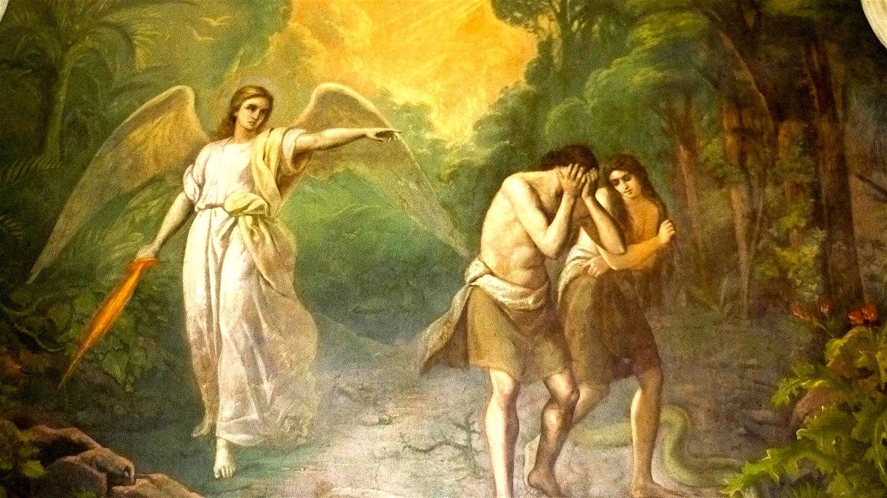
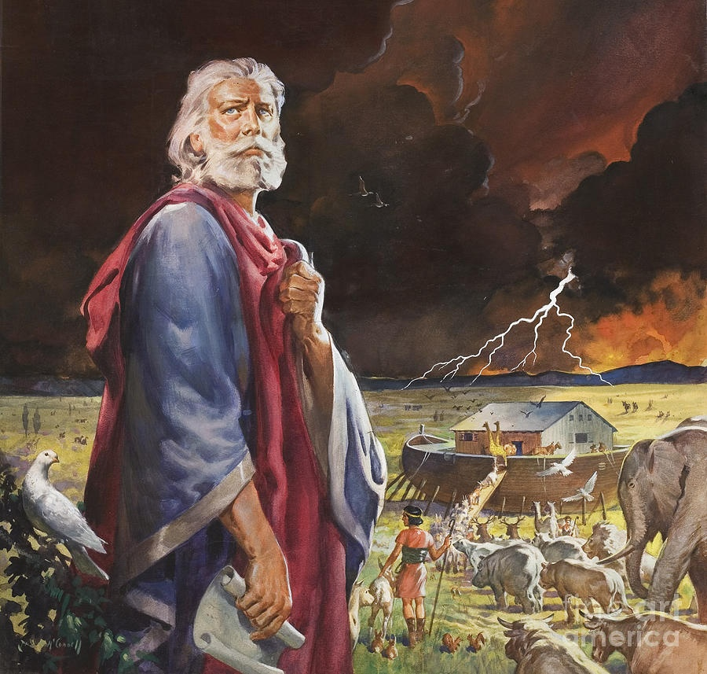
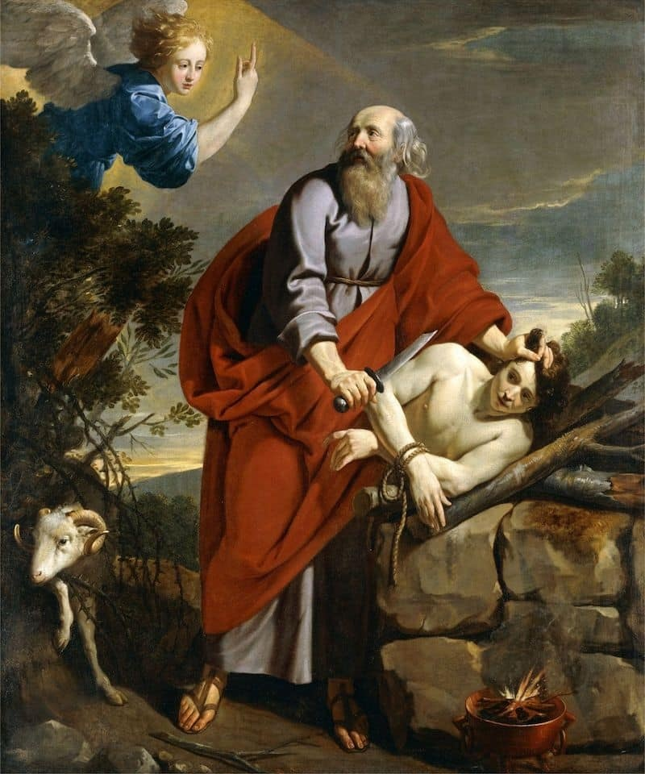
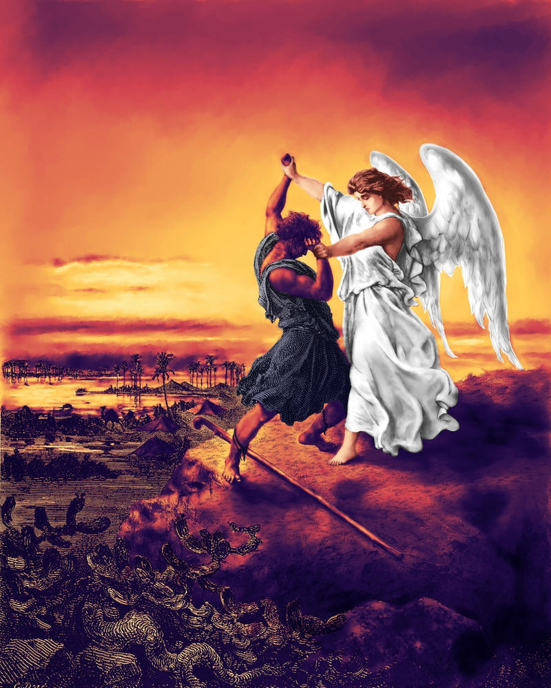

Adam și Eva
Adam și Eva sunt primii oameni creați de Dumnezeu, conform tradiției
iudeo-creștine. Ei reprezintă începutul umanității și primul
legământ cu Dumnezeu. Povestea lor în Grădina Edenului și căderea în
păcat au influențat fundamental înțelegerea naturii umane și a
relației dintre om și divinitate.

Noe
Noe a fost ales de Dumnezeu pentru a salva omenirea și viețuitoarele
de potopul universal. Credința și ascultarea sa l-au făcut să
construiască arca conform instrucțiunilor divine, devenind astfel un
simbol al speranței și al unui nou început pentru omenire.

Avraam
Avraam este considerat părintele celor trei religii monoteiste
majore: iudaismul, creștinismul și islamul. Credința sa
extraordinară și disponibilitatea de a-l sacrifica pe fiul său Isaac
la cererea lui Dumnezeu l-au făcut un model de devotament și
încredere în divinitate.

Iacov
Iacov, fiul lui Isaac și nepotul lui Avraam, este cunoscut pentru
viziunea sa cu scara ce unea cerul cu pământul. După lupta sa cu
îngerul, a primit numele Israel, devenind părintele celor
douăsprezece triburi ale poporului evreu.
